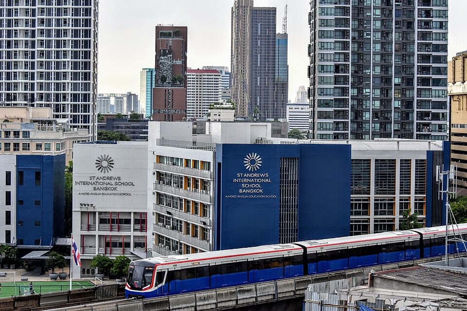

세인트앤드루스 인터내셔널 스쿨 방콕(노드앵글리아 계열) 캠퍼스 · 사진: BHSuk / Wikimedia Commons, CC BY-SA 4.0
세인트앤드루스 방콕(St Andrews International School Bangkok) — 같은 이름 학교가 여럿입니다, 운영 그룹부터 가르세요
1. 먼저 할 일 — "어느 세인트앤드루스인가"를 가릅니다
한국어로 "세인트앤드루스 방콕"을 검색하면 서로 다른 학교의 후기가 한 덩어리로 나옵니다. 학비 이야기와 학년 이야기가 서로 안 맞는 것도 그래서입니다. 방콕의 세인트앤드루스는 크게 두 갈래의 운영 그룹으로 나뉘는 것으로 안내됩니다.
| 갈래 | 어디에 있나 | 받는 연령(안내 기준) |
|---|---|---|
| 노드앵글리아 계열 세인트앤드루스 인터내셔널 스쿨 방콕 — 이 글에서 다루는 학교 | 수쿰빗 쪽 초등 캠퍼스 + 중고등 캠퍼스를 함께 운영 | 유아부터 Year 13까지 이어지는 것으로 안내 |
| 코그니타 계열 세인트앤드루스 수쿰빗 107 | 수쿰빗 동쪽 방나 쪽 | 만 2세부터 18세까지로 안내 |
| 코그니타 계열 세인트앤드루스 사톤 | 사톤(도심 남쪽) | 초등까지로 안내 — 그 위는 다른 학교로 옮겨야 합니다 |
| 코그니타 계열 세인트앤드루스 두싯 | 두싯(도심 북쪽) | 초등까지로 안내 |
표에서 셋째·넷째 줄이 특히 중요합니다. 초등까지만 받는 캠퍼스에 아이를 넣으면, 중등에 올라갈 때 학교를 한 번 더 옮겨야 합니다. 주재원 가정에서 "3년 있을 건데 학교를 두 번 바꾸게 된" 경우가 여기서 나옵니다. 그래서 학교 이름보다 먼저 적으실 것은 이 세 줄입니다.
· ① 주소(캠퍼스) — 수쿰빗인가, 방나인가, 사톤인가, 두싯인가
· ② 운영 그룹 — 노드앵글리아인가, 코그니타인가
· ③ 받는 학년 — 우리 아이가 졸업할 때까지 이 캠퍼스에서 이어지는가
※ 캠퍼스 구성과 받는 학년은 학교가 해마다 조정할 수 있습니다. 위 표는 공개 안내를 정리한 것이니 반드시 학교에 직접 확인하세요.
2. 어떤 학교인가 — 1997년 설립, 2012년 노드앵글리아 합류
이 글에서 다루는 세인트앤드루스 인터내셔널 스쿨 방콕은 1997년에 설립된 것으로 알려진 영국식 국제학교입니다. 2012년에 노드앵글리아 교육그룹에 합류한 것으로 안내됩니다. 캠퍼스는 수쿰빗 쪽에 초등 과정 캠퍼스와 중고등 과정 캠퍼스를 나누어 운영하는 것으로 소개됩니다.
교육과정은 이렇게 이어집니다.
· 유아~Year 9 — 영국 국가교육과정(English National Curriculum)
· Year 10~11 — IGCSE 2년 코스
· Year 12~13 — IB 디플로마
마지막 줄을 눈여겨보십시오. 영국식으로 시작하지만 A-Level이 아니라 IB로 끝납니다. 아시아의 영국계 학교에서 드물지 않은 조합이고, 저희 사이트에도 BISS·NAIS 상하이와 웰링턴 칼리지 상하이가 같은 형태로 정리돼 있습니다. 반대로 파타나와 해로 방콕은 A-Level로 끝납니다.
※ 학생 수·학비·시험 결과처럼 해마다 달라지는 수치는 이 글에 적지 않았습니다.
3. 방콕 6교 비교 — 마지막 2년이 무엇으로 끝나는가
방콕은 한국 가정이 보는 학교가 많아서 오히려 고르기 어렵습니다. "마지막 2년에 무엇으로 끝나는가" 한 칸만 비교해도 후보가 절반으로 줄어듭니다.
| 학교 | 계열 | 마지막 2년 |
|---|---|---|
| 세인트앤드루스 방콕 (이 글) | 영국식 · 노드앵글리아 | IB 디플로마 |
| NIST | IB 전 과정 | IB 디플로마 |
| KIS | IB 네 과정(CP 포함) | IB 디플로마 또는 CP |
| ISB 방콕 | 미국식 | 졸업장 + AP·IB 선택 |
| 파타나 | 영국식 | A-Level |
| 해로 방콕 | 영국식 · 기숙 병행 | A-Level |
이 표가 알려 주는 것은 하나입니다. "영국식 학교"라는 말만으로는 고등 2년이 정해지지 않습니다. 같은 영국식이라도 세인트앤드루스는 IB로, 파타나와 해로는 A-Level로 끝납니다. 공부 방식이 다릅니다. A-Level은 적은 수의 과목을 깊게 파고 외부 시험 비중이 크고, IB 디플로마는 여섯 과목에 과제와 내부 평가가 따라붙습니다(→ A-Level 과목 선택·IB 점수 구조).
4. 한국(주재원) 학생이 겪는 어려움 — 두 번의 "2년 코스"
이 학교의 고등 구간은 2년짜리 묶음이 연달아 두 번 옵니다. Year 10~11의 IGCSE, Year 12~13의 IB 디플로마입니다. 합류 시점이 어디냐에 따라 부담이 전혀 다릅니다.
| 합류 시점 | 부담 | 먼저 물어볼 것 |
|---|---|---|
| 초등~Year 8 | 비교적 열려 있는 구간 | 영어 지원(EAL)이 그 학년에 있는지 → EAL |
| Year 9 | 다음 해 IGCSE 과목을 고르는 해 | 과목 선택이 언제, 어떤 범위에서 이뤄지는지 |
| Year 10 중간 | 가장 위험 · 2년 코스의 한가운데 | 중간 합류가 되는지, 어느 과목이 특히 부담인지 |
| Year 12 직전·중간 | DP 과목 조합을 되돌리기 어려움 | HL 과목 전제 조건과 개설 과목 → 과목 신청 |
한국 가정의 발령은 중3~고1 무렵에 몰리는데, 그 시기가 영국식 학년으로는 Year 10 전후입니다. 표의 셋째 줄 자리입니다. 도착하기 전에 학교에 "그 학년 중간 합류가 가능한가, 가능하다면 어느 과목이 부담이 큰가"를 먼저 물으셔야 합니다. 편입 전반은 편입·전학 총정리에 정리해 두었습니다.
5. 그래서 이렇게 준비합니다 — 그리고 방콕이라는 조건
· ① 어느 세인트앤드루스인지 먼저 확정합니다(위 1번 표의 세 줄).
· ② 마지막 2년이 무엇인지 적습니다. IB로 끝나는 학교는 글쓰기와 기한 관리가 점수를 만듭니다.
· ③ 영어는 "쓰기"부터 손봅니다. IGCSE와 IB 모두 근거를 들어 설명하는 글에서 갈립니다. → 입학 준비 총정리
· ④ 수학은 용어와 서술을 함께 봅니다. 선행을 해 둔 아이도 영어 용어와 풀이 서술에서 깎입니다.
· ⑤ 통학 시간은 분으로 적습니다. 방콕은 거리보다 교통 상황이 변수이고, 전철(BTS·MRT) 노선 위에 있느냐가 저녁 시간을 바꿉니다. → 통학·스쿨버스
📌 태국은 한국과 시차가 2시간입니다. 한국 저녁 9시가 방콕 저녁 7시라, 아이가 하교하고 저녁을 먹은 뒤 시간대에 화상 수업을 잡기 좋습니다. 다만 학사 일정은 한국과 어긋나므로 과외 계획은 현지 학사 일정에 맞춰 세우셔야 합니다. → 국제학교 학사 일정
관련 검색어: 방콕국제학교 · 방콕국제학교수학과외 · 방콕국제학교영어과외 · 세인트앤드루스방콕 · 태국주재원과외
정리
세인트앤드루스 인터내셔널 스쿨 방콕은 1997년 설립으로 알려진 영국식 학교이고, 2012년 노드앵글리아 합류 이후 수쿰빗 쪽 초등 캠퍼스와 중고등 캠퍼스를 함께 운영하는 것으로 안내됩니다. 과정은 영국 국가교육과정 → IGCSE → IB 디플로마입니다. 이 글에서 꼭 가져가실 것은 학교 하나의 정보가 아니라 "방콕에서 세인트앤드루스를 검색할 때는 캠퍼스·운영 그룹·받는 학년 세 줄을 먼저 적으라"는 것입니다. 아이가 지금 Year 몇에 해당하는지에 따라 당장 할 일이 다르니, 30분 무료 수업으로 현재 위치부터 확인해 보시기 바랍니다. (캠퍼스·학년 구성·운영 과정은 바뀔 수 있으니 반드시 학교 요강을 직접 확인하세요.)